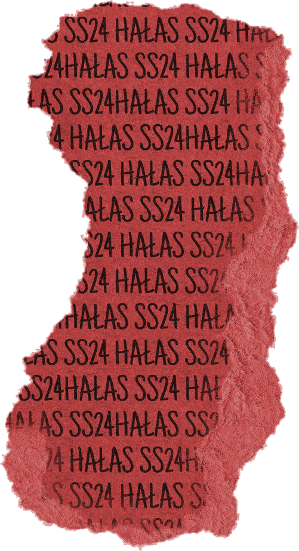

Throughout this module, I have created 6 digitally modified images, 3 user interface designs and a gif image. I will expand upon the techniques I used to manipulate the 6 images and explain more deeply my overarching theme of those images. I will also explore deeply my 3 user interface designs explaining the conception of my ideas and giving the designs context explaining why I altered the theme from the first 6 images. I will also go into detail about the creation of the gif image, why I chose the design and the other ideas I explored before creating this image. Throughout these, I will explore some of the limitations of my designs and where I would like to expand upon the designs submitted.
For my first submission, I produced 6 images themed around the film Don’t Worry Darling (2022). I had recently rewatched the film and found a lot of beauty in the 50’s aesthetic and liked the idea of combining this with a modern style. I enjoyed creating a mixture of clean and crisp edited photos that showed the film's modern filming style but also using noise and grain filters to create more authentic 50s-style images that gave the appearance of being printed and withered. I drew a lot of inspiration from 50’s postcards (Peck-Davis, Lapis, 2018) and initially played with many different movies in this format but then kept coming back to the design I’d created for Don’t Worry Darling (2022). This led me to rewatch the film and had lots of ideas for creative images. Particularly a key moment in the film is when Alice is breaking the eggs that have nothing inside of them and she begins to question how everything is made by the victory company. This persuaded me to create the egg carton image that would show these ‘victorious’ eggs. I also enjoyed the process of creating the victory logo and decided to explore logos and especially typography deeper in my 3 user interfaces.
I had initially intended to continue my initial theme into the 3 user interface designs however I decided I would like to explore different creative industries to broaden my capabilities and try out different techniques. I felt inspired while looking through Pinterest at fashion brands and looked at many of their websites and wanted to create something that could add more flair to the websites straying away from the clean and crisp styles they usually follow. A study by Boardman and McCormick showed that most users of fashion sites spend the least amount of time on the home page and will often look to the top left of homepages to leave them faster to find what they were looking for (2022). I thought of this as a challenge to find a way to encourage users to look at the homepage by leaving the top left fairly blank and creating eye-catching images in the centre that require the user to scroll to see actively making them want to look through the homepage. I also steered away from the usual crisp designs mostly and opted for more creative and unique pages that would improve the user's engagement and hold their attention as they would be curious about what would come next. I decided to focus on 3 different concepts for a homepage so that I could explore different design styles wanting to explore both maximalism and minimalism. I decided to do 2 maximalist designs and 1 minimalist as I found a study by Soderstrom, Carlsson, and Mejtoft that explained specifically how millennials didn't have a preference for either style by users but maximalism drew more emotions and was considered to be more innovative (2019).
User Interface Design 1
reference images
For the first design, I decided to create a 90’s themed website because of the resurgence in popularity of this aesthetic. Park highlights how this aesthetic style especially in the realm of fashion is constantly enduring the trend cycle and resurges in popularity among new generations with reimagining those trends (2021). To replicate this trend I utilised Windows-style image containers that would provide a feeling of nostalgia for older users while appealing to younger users with it being modernized. This is especially reinforced in the top image for the spring-summer collection sitting in a window that has multiple behind it to create a drag effect reminiscent of old computer glitches. I think this strong sense of nostalgia would speak well to users as nostalgia can create an emotional connection with the users increasing their willingness to buy from the site (Cui, 2015). I also chose the colour pallet of light and dark purple to reflect the spring feeling of new flowers in bloom I also found in a study that for 20% of the participants purple was connected to more positive feelings such as interest, amusement, pride, pleasure, contentment (Uusküla et al., 2022). To help carry this theme throughout the page I designed all the windows to have a light-to-dark purple gradient, stand-out dark purple emojis, a light purple footer and an almost transparent background of the brand name in light purple. I decided to make this background highly transparent so as to not distract from the images on the page and create too much distraction. For this background I was also inspired by the vertical binary code from The Matrix (1999) and decided to flip this horizontally and to add more flair I liquified the text. I thought this would further reinforce the 90s aesthetic while still modernising it. I chose to have some stand-out items of t-shirts, pants and suits in a side-scrolling style so users could have a quick glance at certain items that were popular in these categories with the possibility of categories to be monitored to see which are popular and alter these to match user preferences and further individualise this if users are signed into the website. With this information, I would be able to faster provide the users with the items they would be most likely to search for in the fastest amount of time improving the site's navigability allowing users to find what they are looking for with ease. Lastly, I chose to make all the icons and the main text pixelated to reinforce the theme. For the header font, I chose to use Press Start 2P although based on an 80’s game (Boisclair) I believed this would fit well to the windows as the style as its reminiscent of the pixilated fonts on 90’s websites. I also felt that by using this font mixed with other 8-bit emojis it would in a sense gamify the website to create a sense of immersion (Lidwell, Holden, Butler, 2010).
IUser Interface Design 2
For the second design, I chose a grunge style wanting to use some of the textures I had experimented with in my 6 designs. On a black background, I placed 2 overlays with high transparency one of some crumpled paper to add texture and one of a newspaper to add more depth. I also chose grunge as I thought it was the style that best fit the slogan for the brand ‘Bring the noise’ with grunge fashion associated with louder metal or punk music. This slogan came from the title itself HAŁAS which is a Polish word meaning noise. I chose to do this as most high luxury brands are based on foreign words or surnames like Gucci, Balenciaga and especially COMME des GARÇONS. I took great inspiration from COMME des GARÇONS as it's a Japanese brand using a French name (Gordon, 2015) and wanted to experiment with this using a foreign word for my English brand. HAŁAS was suggested to me by a Polish friend and upon further research found that in Hungarian it meant grateful and in Slovac it meant uproar. I liked the connotations of all of these words for this brand as it sounded like the start of a fashion revolution something new but still thankful to what came before. When deciding upon a font for the logo for this design I wanted to choose something that would stand out and be instantly recognizable as a fashion brand that's why I chose Libre Barcode 128 Text as I believed this could be seen as a form of iconic representation. When users would see the barcode they would immediately think of shopping much like how an airport will use the image of a plane or how a restaurant will use a knife and fork (Lidwell, Holden, Butler, 2010). This concept was also used in the creation of the bag and person icons at the top of all 3 user interfaces, frequent internet shoppers could immediately associate these with a shopping bag where their purchased items are stored and a person for a personal account or log-in section. Many of the other features on this website were paper-based like the tape used in the headers for different clothing lines and a torn paper background for each of these sections once again employing immersion within the site creating a flowing page that fits together well giving the user content to focus on without distraction, especially toward the bottom part of the page where the items of clothing are located (Lidwell, Holden, Butler, 2010). Lastly for the person icon at the top left of the page I customised the icons I found to give theperson a skull for a head to fit the grunge theme.
User interface Design 3
For my final design, I wanted to opt for something more minimalistic but still with some flair. I decided to opt for a green and brown colour pallet to give the perception of an eco-friendly brand choosing less saturated colors to further this feeling. (Chu, Rahman, 2012) I also experimented with continuation heavily with the top 3 images in a linear path down and separating the bottom images into an almost curved z-style shape so the eyes could follow the path with minimal disruption (Lidwell, Holden, Butler, 2010). Throughout all the 3 user faces I used the same body text of Archivo Narrow as a simple font that could be easily legible and followed guidelines highlighted by DuBay to ensure the writing was readable by using familiar words with correct spelling and avoiding jargon(2004). For the header font of this brand, I wanted to use something classic yet still fun and drawn upon the 50’s style from the 6 images in the past project. With this in mind, I settled on the font Purple Purse as it gave the feeling of a luxury soap company that still gave some fun bounce to the letters (Bonislawsky). I also decided to use a serif font as this is most common in style and fashion with sans serif making the least appearance in this area (Shinahara et al., 2019).
Gif image
alternate gif
For my gif design, I researched gifs used on fashion sites with most of these being advertisements. However, I wanted to lean away from this common practice to create something more unique and first experimented with the logo of the brand. I played with the accent on the L making this flash to add more character to a simple logo. Ultimately I wanted to create something more unique so opted to have 3 windows of new items in the first user interface design that would appear on top of the past ones' corner almost as if they were popup ads on an old website using the drag effect once again but giving more space for users to see the items. I also checked the accessibility of this gif and decided to make it repeat 3 times and then stop so as to not distract users too much (W3C, 2016).
While making the above images there were some issues I encountered I initially created social media icons for the first user interface design pixel by pixel to create an 8-bit version of modern apps however these felt clunky and when added to the colour pallet they didn't seem to fit so I instead opted to use single coloured icons from the same collection as the 8-bit icons dotted throughout the page and this helped to bring more continuity to the page as a whole. On the second user interface design I found an image of red ripped paper that blended nicely with the blacks and reds on the page already however was not fond of the writing that was on it and wanted to make it more custom to my brand so I instead created my own from an image of paper I found on the web changing the colour and adding the site branding as the writing.

I enjoyed exploring all the different fonts and icons to use and found that I learned a lot throughout the process of creating these images originally starting with a mobile interface and moving onto a tablet interface for the final designs. I appreciate the diversity in the design styles and feel like I have broadened my capabilities through creating these images. Although there were some issues I faced I overcame them to add more fluidity to my designs.
Bibliography
Boardman, R. and Mccormick, H., (2022). Attention and behaviour on fashion retail websites: an eye-tracking study. Information Technology & People, 35(7), pp.2219- 2240.
Bonislawsky, B.J. (no date) Purple purse, Google Fonts. Available at: https://fonts.google.com/specimen/Purple+Purse/about?preview.text=HALAS [Accessed: 22 April 2024].
Chu, A. and Rahman, O., 2012. Colour, clothing, and the concept of ‘green’: Colour trend analysis and professionals’ perspectives. Journal of Global Fashion Marketing, 3(4), pp.147-157.
Cui, R. (2015) ‘A review of nostalgic marketing’, Journal of Service Science and Management, 08(01), pp. 125–131. doi:10.4236/jssm.2015.81015.
Don’t Worry Darling (2022) Directed by O. Wilde [Film]. United States: Warner Bros. Pictures.
DuBay, W.H., 2004. The principles of readability. Online Submission.
Gordon, C. (2015) The true story of how Comme des Garçons got its name, Highsnobiety. Available at: https://www.highsnobiety.com/p/how-comme-des-garcons-got-its-name/ [Accessed: 22 April 2024].
Lidwell, W., Holden, K. and Butler, J., 2010. Universal principles of design, revised and updated: 125 ways to enhance usability, influence perception, increase appeal, make better design decisions, and teach through design. Rockport Pub.
Park, B. (2021) Can the 90’s aesthetic endure the trend cycle to stay high fashion? - bricks magazine, BRICKS Magazine - If you have a voice, use it. Available at: https://bricksmagazine.co.uk/2021/08/26/can-the-90s-aesthetic-endure-the-trend-cycle-to-stay-high-fashion/ [Accessed: 21 April 2024].
Peck-Davis , A. and Lapis, D. (2018) The immigrant story behind the classic ‘greetings from’ postcards, Smithsonian.com. Available at: https://www.smithsonianmag.com/travel/immigrant-story-behind-classic- greetings-from-postcards-180970894/ [Accessed: 25 February 2024].
Shinahara, Y. et al. (2019) ‘Serif or SANS: Visual font analytics on book covers and online advertisements’, 2019 International Conference on Document Analysis and Recognition (ICDAR) [Preprint]. doi:10.1109/icdar.2019.00170.
Soderstrom, U., Carlsson, L. and Mejtoft, T., (2019), September. Comparing millennials view on minimalism and maximalism in web design. In Proceedings of the 31st European Conference on Cognitive Ergonomics (pp. 92-95).
The Matrix. (1999) Directed by Lilly, Wachowski and Lana, Wachowski [Film] United States: Warner Bros. Pictures.
Uusküla, M., Mohr, C., Epicoco, D. and Jonauskaite, D., 2023. Is purple lost in translation? The affective meaning of purple, violet, and lilac cognates in 16 languages and 30 populations. Journal of Psycholinguistic Research, 52(3), pp.853-868.
W3C (2016) G152: Setting animated GIF images to stop blinking after n cycles (within 5 seconds) (no date) W3C. Available at: https://www.w3.org/TR/WCAG20-TECHS/G152.html [Accessed: 22 April 2024].
Image and font reference
User interface design 1
ASOS (no date) Women’s clothes: Shop for women’s fashion. Available at: https://www.asos.com/women/ [Accessed: 22 April 2024].
Boisclair, C.C. (no date) Press start 2P, Google Fonts. Available at: https://fonts.google.com/specimen/Press+Start+2P/about [Accessed: 22 April 2024].
Streamline and Le Moign, V. (no date) 1,300 free pixel icons – vector pixel icons (SVG), Figma. Available at: https://www.figma.com/community/file/1196864707579677521/1-300-free-pixel-icons-vector-pixel-icons-svg?searchSessionId=lv5b8iqj-zkd28js1cxl [Accessed: 22 April 2024].
Omnibus-Type (no date) Archivo narrow, Google Fonts. Available at: https://fonts.google.com/specimen/Archivo+Narrow [Accessed: 22 April 2024].
User Interface design 2
Associated Newspapers (2024) The Evening News (London newspaper), Wikipedia. Available at: https://en.wikipedia.org/wiki/The_Evening_News_%28London_newspaper%29 [Accessed: 22 April 2024].
Fister, L. (no date) Libre barcode 128 text, Google Fonts. Available at: https://fonts.google.com/specimen/Libre+Barcode+128+Text [Accessed: 22 April 2024].
Premium photo: Ripped vintage paper background. torn brown paper on white.: Vintage paper background, paper background, free paper texture (2024) Pinterest. Available at: https://www.pinterest.co.uk/pin/460352393176613008/ [Accessed: 22 April 2024].
Transparent adhesive plastic tape set (2024) Pinterest. Available at: https://www.pinterest.co.uk/pin/460352393176612882/ (Accessed: 22 April 2024).
Urbino, I. (no date) Lekton, Google Fonts. Available at: https://fonts.google.com/specimen/Lekton [Accessed: 22 April 2024].
Short, C. (no date) Mansalva, Google Fonts. Available at: https://fonts.google.com/specimen/Mansalva [Accessed: 22 April 2024].
Omnibus-Type (no date) Archivo narrow, Google Fonts. Available at: https://fonts.google.com/specimen/Archivo+Narrow [Accessed: 22 April 2024].
Elchin (no date) Popular Social Media Icons, Figma. Available at: https://www.figma.com/community/file/1268967617544778307 [Accessed: 22 April 2024].
Ken (no date) 20,000+ ultimate icon library, Figma. Available at: https://www.figma.com/community/file/1286049333187755908 [Accessed: 22 April 2024].
Skylum, T. (2023) How to apply a grunge texture to a photo background in photoshop: Skylum how-to, How to apply a grunge texture to a photo background in Photoshop | Skylum How-to. Available at: https://skylum.com/how-to/how-to-get-that-grunge-texture-in-a-photo-background-in-photoshop [Accessed: 22 April 2024].
Ripped paper effect - texturas de papel PNG - free transparent PNG download - pngkey (no date) PNGkey.com. Available at: https://www.pngkey.com/detail/u2w7y3o0o0i1e6o0_ripped-paper-effect-texturas-de-papel-png/#google_vignette [Accessed: 22 April 2024].
Vuang (no date) Premium PSD: Burnt edge paper on transparent background, Freepik. Available at: https://www.freepik.com/premium-psd/burnt-edge-paper-transparent-background_29123760.htm [Accessed: 22 April 2024].
Gelpi (no date) Premium Photo: Black Phone, Freepik. Available at: https://www.freepik.com/premium-photo/black-phone_2910663.htm?epik=dj0yJnU9NUJ4eko4Y08wM3VpclN3M0VHZ3B2V2hWM29jUnVQbzQmcD0wJm49ZUxfWHJ4b3NTVnpaSXIyOXNFTFBHUSZ0PUFBQUFBR1ltUl9B [Accessed: 22 April 2024].
Charles Jeffrey’s new capsule is all about the enjoyment of being comfy (2020) Hero. Available at: https://hero-magazine.com/article/172488/charles-jeffreys-new-capsule-is-all-about-the-enjoyment-of-being-comfy [Accessed: 22 April 2024].
Jeffrey, C. (no date) Charles Jeffrey loverboy, Luxury Streetwear. Available at: https://charlesjeffreyloverboy.com/ [Accessed: 22 April 2024].
Rhiannon (2024) Pin van ùêëùê°ùê¢ùêöùêßùêßùê®ùêß Op Twilight: Woorden, Pinterest. Available at: https://www.pinterest.co.uk/pin/460352393176612881/ [Accessed: 22 April 2024].
Rawpixel (2024) DIY Ripped Paper Craft PNG: Free PNG sticker - rawpixel: Paper texture, Torn Paper, scrapbook printing, Pinterest. Available at: https://www.pinterest.co.uk/pin/460352393176612820/ [Accessed: 22 April 2024].
User Interface design 3
Bonislawsky, B.J. (no date) Purple purse, Google Fonts. Available at: https://fonts.google.com/specimen/Purple+Purse/about?preview.text=HALAS [Accessed: 22 April 2024].
Cyreal (no date) Prata, Google Fonts. Available at: https://fonts.google.com/specimen/Prata [Accessed: 22 April 2024].
H2D2 GmbH (no date) Shopicons: Free Iconset, Figma. Available at: https://www.figma.com/community/file/1066366818982322609 [Accessed: 22 April 2024].
Omnibus-Type (no date) Archivo narrow, Google Fonts. Available at: https://fonts.google.com/specimen/Archivo+Narrow [Accessed: 22 April 2024].
SadaX Design Agency (no date) Geometric art shapes, Figma. Available at: https://www.figma.com/community/file/1249308736950504577/geometric-art-shapes?searchSessionId=lvavnttg-rukfm45o27 [Accessed: 22 April 2024].
Women’s, Men’s & Children’s Clothing: Lifewear: Uniqlo Eu (no date) Women’s, Men’s and Kids’ Clothing & Accessories. Available at: https://www.uniqlo.com/eu/en/home [Accessed: 22 April 2024].
Gif image
Boisclair, C.C. (no date) Press start 2P, Google Fonts. Available at: https://fonts.google.com/specimen/Press+Start+2P/about [Accessed: 22 April 2024].
Balenciaga (no date) Balenciaga Official Online Boutique US. Available at: https://www.balenciaga.com/en-gb?ad=RSA&gad_source=1&gclid=Cj0KCQjwlZixBhCoARIsAIC745AYjICCzrkDeYcQCSDHvy2Ub43dPOA_FGIAQ2QxGSQgSj94JmLVPC0aAikEEALw_wcB&gclsrc=aw.ds [Accessed: 22 April 2024].